らじぽけの使い方
ぜんぶこの1ページにあります。上から読んでも、下の目次から飛んでも、
左の検索窓に言葉を入れて絞り込んでも構いません。
らじぽけは radiko を聴くためのアプリで、radiko 公式のアプリではありません。
放送を聴くための契約（radiko のアカウント・radiko プレミアム）と、
このアプリの機能に関する契約（らじぽけのプラン）は別のものです。
くわしくは
料金プラン をご覧ください。
やりたいことから探す
よくある「〜したい」を並べています。押すと、その場で手順が開きます。
聴く
昔の番組を聴きたい
放送が終わった番組は「タイムフリー」で聴けます。
- 「番組表」タブを開く
- 上の局名から局を、日付から日を選ぶ
- 聴きたい番組の ▶ を押す
さかのぼれる範囲は radiko 側で決まっています。範囲の外に出た回は
「タイムフリーで聴けます」の表示が消えます。→
過去の番組を聴く
他の地域の番組を聴きたい
お住まいの地域の外の局を聴くには、radiko プレミアム（エリアフリー）への
加入が必要です。radiko と利用者の間の契約で、らじぽけのプランとは別のものです。
- 設定 →「アカウントとプラン」を開く
- 「radiko にログイン」から、お使いの radiko アカウントでログインする
NHK の各局は、radiko プレミアムに加入していても対象外です。
これは radiko 側の決まりで、らじぽけからは変えられません。
途中から聴き直したい
録音した番組・タイムフリーの番組は、聴いたところを覚えています。
もう一度開くと、そこから続きが始まります。
好きな場所に戻りたいときはマークが便利です。→
マーク（ブックマーク）
倍速で聴きたいスタンダード以上
- 再生中に、画面下から再生シートを開く
- 右の「1×」を押す
- 0.5／1／1.5／2／3／5倍から選ぶ
設定 →「再生速度」で、次から使う速さを決めておけます。
ライブは実時間で流れているので、常に等倍です。
共有・SNS
聴いている番組を X に投稿したい
- 再生シートの「共有」を押す
- 「いま聴いている場所」を選ぶ
- 送り先の「X」を押す
投稿する文はその場で書き直せます。→
SNSに投稿する
面白かった場所を指定して共有したい
共有シートの「どこから聴いてもらうか」で、番組のはじめ・いま聴いている場所・
マークした場所・曲が流れた場所から選べます。選んだ場所から再生が始まるリンクになります。
メモを付けて共有したい
- 気になったところで「マークを置く」を押す
- マークの ✎ からメモを書く
- そのマークの ↗ を押して共有する
メモは投稿する文の先頭に入ります。「付けるもの」でメモを外すこともできます。
曲
流れている曲を YouTube Music で聴きたい
- 番組詳細の「オンエア曲」タブを開く
- 曲の下の「YT Music」（または「Spotify」）を押す
そのサービスのアプリが入っていれば、アプリで開きます。→
いま流行っている曲
この曲がよくかかる局を知りたい
- 「分析」タブ →「いま」を開く
- 曲を押して「曲の詳細」を開く
- 「よく流れる局」を見る
好きなアーティストの曲がいつ流れたか見たい
- 「分析」タブ →「アーティスト」を開く
- 名前を入れて検索する
- 週ごとの回数のグラフと、曲の一覧が出る
→ アーティストで探す
人
出演者の他の番組を探したい
- 番組詳細を開く
- 出演者の名前の札を押す
- 「分析」タブの「出演者」に、その人の出ている番組が並ぶ
→ 出演者から探す
好きなパーソナリティの番組を見つけたい
2つのやり方があります。
- 番組表の検索 — 右上の🔍から、名前で番組を探す
- 分析の「出演者」 — 番組表から集めた出演者を、名前で引く
お気に入りの「キーワード」に名前を入れておくと、
その人の出る番組を自動で録ることもできますプレミアム
録音・マーク
番組を保存しておきたい
- 番組表・検索結果の ⬇ を押す
- 「録音」タブの「DL中」で進み具合を見る
放送予定の番組を押すと、放送が終わってから自動で録ります。→
録音する
毎週の番組を自動で録りたいプレミアム
- 番組詳細の ♥ を押す（番組表で長押ししても登録できます）
- 「過去の回も録音しますか？」で「今後のみ」か「過去分も録音する」を選ぶ
→ 自動で録音する
気になった場所に印をつけたいスタンダード以上
- 再生シートいちばん下の「マークを置く」を押す
- 一覧の ✎ からメモを書く
再生は止まりません。→
マーク（ブックマーク）
印をつけた場所から再生したいスタンダード以上
再生シートのマークの一覧から、行を押すとその場所に飛びます。
設定 →「マークから再生する位置」で、少し手前から始めるようにもできます。
押すまでの一呼吸を見込んだ設定です。
その他
ラジオで目覚ましたいプレミアム
- 設定 →「ラジオで目覚まし」を開く
- 右下の ＋ から、時刻・繰り返し・鳴らすものを決める
電波が届かないときは、端末のアラーム音に切り替わります。→
ラジオで目覚まし
寝落ちしても止まるようにしたい
- 再生シートいちばん下の「タイマー」を押す
- 15分〜2時間から選ぶ（分を直接指定することもできます）
→ スリープタイマー
ホーム画面から操作したい
ホーム画面の空いているところを長押し →「ウィジェット」→「らじぽけ」から選びます。
再生・録音済み・お気に入り局の3種類があります。→
ウィジェット
使っていない機能を知りたい
このページの目次が、そのまま全機能の一覧です。左（狭い画面では上）の目次から、
気になる見出しを開いてみてください。
とくに見落とされがちなのは
分析タブ・
ウィジェット・
共有 の3つです。
はじめに
らじぽけでできること
らじぽけは、radiko の放送を聴き、録り、あとから探せるようにする Android アプリです。
できることは大きく6つあります。
- 聴く — いま流れている放送（ライブ）と、終わった放送（タイムフリー）
- 録る — 番組を端末に保存し、期限を気にせず聴く
- 印をつける — お気に入りの番組・局と、番組の中の気になった場所（マーク）
- 共有する — 番組の好きな場所を指すリンクを作り、SNS へ投稿する
- 調べる — 放送局で流れた曲と、番組表に載った出演者を集計して見る
- 便利に使う — ウィジェット・目覚まし・スリープタイマー
「分析」タブで集計しているのは、放送局で流れた曲と番組表の出演者です。
あなたが何を聴いたかの履歴ではありません。
画面の見かた
画面のいちばん下に、6つのタブが並んでいます。
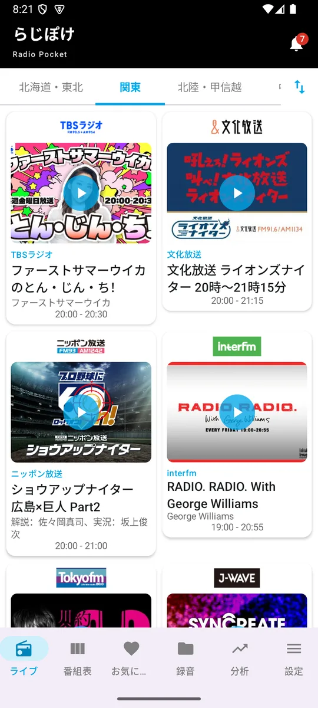
ライブ：いま流れている放送
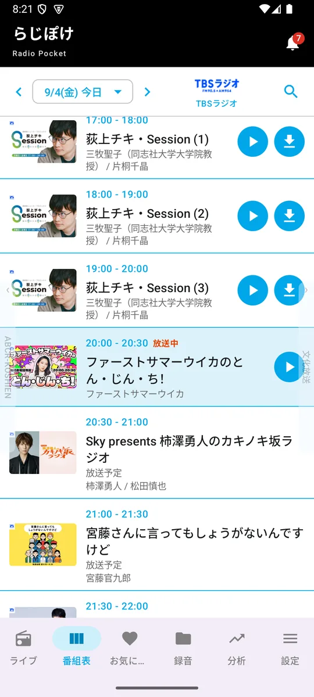
番組表：局と日付で番組を探す
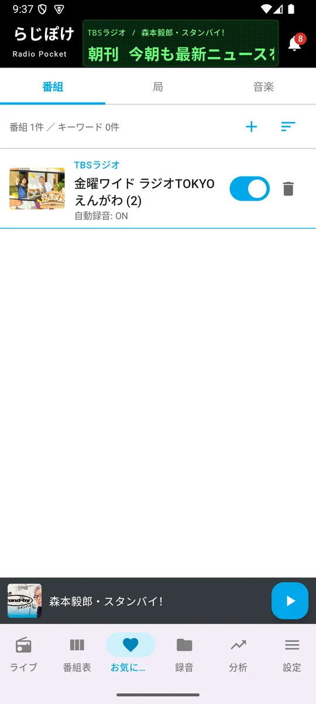
お気に入り：番組・局・音楽
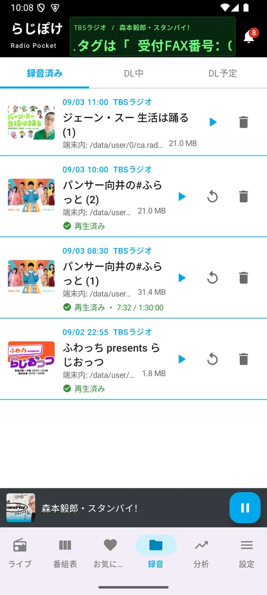
録音：録音済み・DL中・DL予定
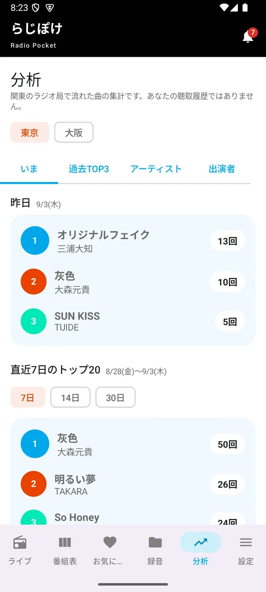
分析：曲と出演者の集計
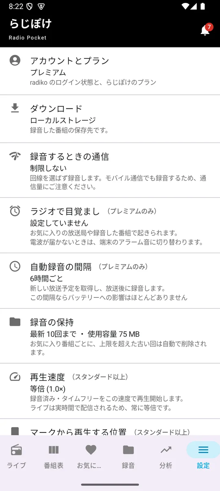
設定：プラン・保存先・明るさなど
画面のいちばん上にある緑の帯は電光掲示板です。
いま再生している番組の局名・番組名と、番組情報の本文が流れます。
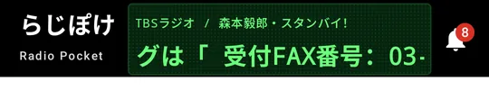
再生を始めると、下に細い再生バーが出ます。押すと再生シートが開き、
早送り・マーク・お気に入り・タイマー・共有がここに集まっています。
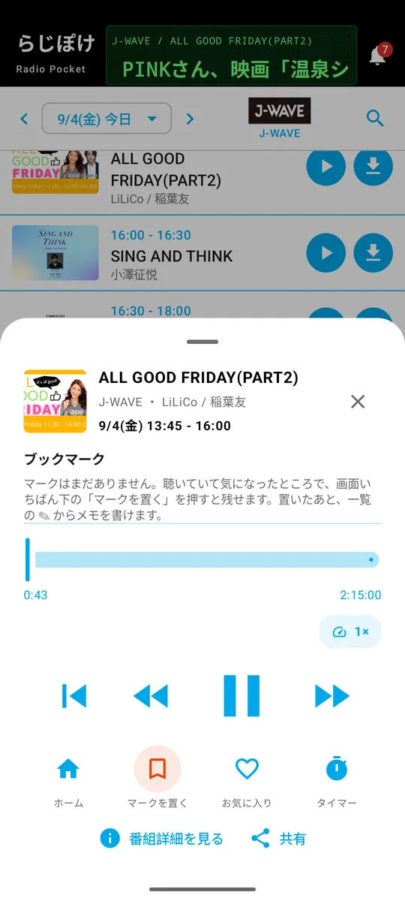
再生シート。下の4つがホーム／マークを置く／お気に入り／タイマー
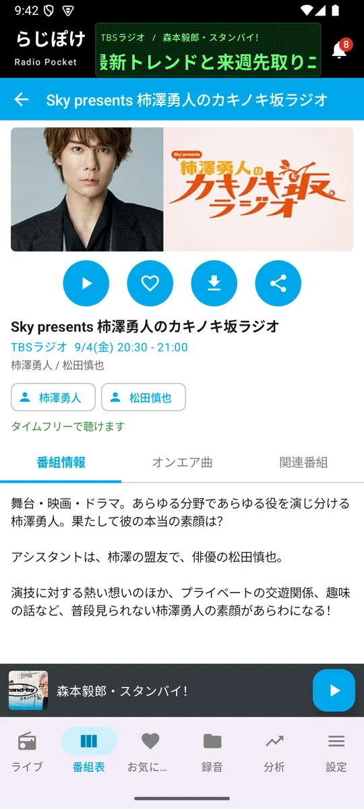
番組詳細。▶ ♥ ⬇ ↗ で再生・お気に入り・録音・共有
こんな使いかた
- まずは「ライブ」から。局のカードを押すだけで鳴ります
- 聴き逃した番組を探すなら「番組表」
- 何ができるか分からなくなったら、再生シートの下の4つを見る
聴く
ライブで聴く
「ライブ」タブに、いま聴ける局が並びます。局のカードを押すと、すぐ鳴ります。
- 「ライブ」タブを開く
- 上のタブで地域を切り替える（お住まいの地域は自動で選ばれます）
- 局のカードを押す
再生中は通知やロック画面からも操作できます。
画面を消したまま、家事をしながらでも止めたり再開したりできます。
ライブは実時間で流れているので、巻き戻しや速さの変更はできません。
局の並び順は、右上の ⇅ から地域ごとに決められます。
一度決めれば、次からその並びになります。
こんな使いかた
- 朝の支度をしながら、いつもの局を流しっぱなしにする
- よく聴く局を長押しして「お気に入りの局」に入れておく
- ウィジェットから、アプリを開かずにその局を鳴らす
番組表から聴く
「番組表」タブは、局 × 日付で番組を並べたものです。
- 上の局名を押して、局を選ぶ
- 左の日付を押して、日を選ぶ
- 番組を押すと、再生シートが開く
左右にスワイプしても、隣の局・前後の日に移れます。
番組名がうろ覚えのときは、右上の🔍から番組名・出演者・番組情報で探せます。
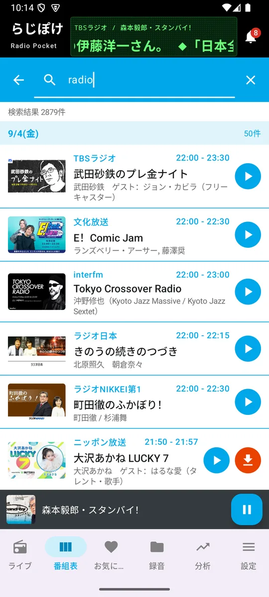
こんな使いかた
- 「先週やっていた、あの番組」を検索から掘り出す
- 局名を長押しして、アプリを開いたとき最初に出る局を決める
- 気になる番組を長押しして、その場でお気に入りに入れる
過去の番組を聴く
放送が終わった番組は、タイムフリーで聴けます。
番組詳細に「タイムフリーで聴けます」と出ていれば聴ける回です。
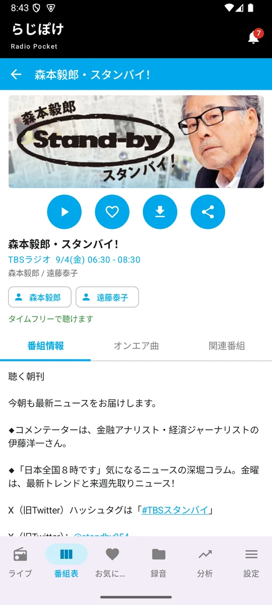
番組情報。出演者の札から、その人の番組を探せます
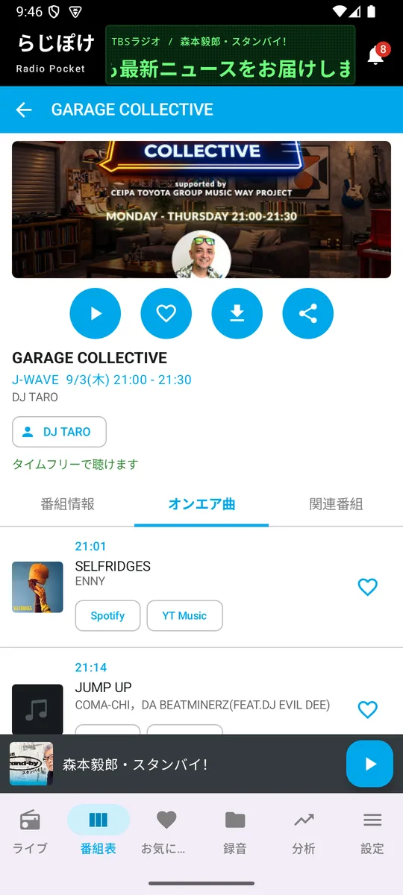
オンエア曲。押すとその曲が流れた場所から聴けます
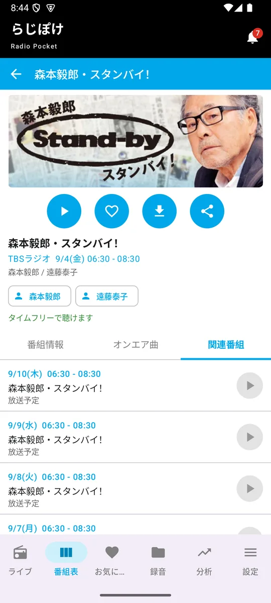
関連番組。同じ番組の前後の回が並びます
さかのぼれる範囲は radiko 側で決まっています。
範囲を過ぎた回は聴けなくなり、録音もできません。
期限を気にせず残しておきたい回は、
先に録音してください。
こんな使いかた
- 聴き逃した回を、通勤の行き帰りで追いつく
- 好きな曲がかかった回を、オンエア曲から一発で頭出しする
- 気に入った番組は「関連番組」から前の回にさかのぼる
再生中にできること
再生シートには、聴きながら使うものが集まっています。
- 15秒戻る／15秒進む — 聞き逃したところをすぐ聴き直す
- 先頭へ戻る — 番組のはじめに戻る
- 再生速度スタンダード以上 — 0.5〜5倍
- マークを置くスタンダード以上 — 気になった場所に印
- お気に入り — この番組を登録する
- タイマー — 指定した時間で止める
- 共有 — いま聴いている場所を SNS へ
録音した番組・タイムフリーの番組は、聴いたところを覚えています。
もう一度開くと、そこから続きが始まります。
こんな使いかた
- 長い番組を1.5倍で聴いて、聞き取りにくいところだけ等倍に戻す
- 面白かったところで「マークを置く」→ あとでそこだけ聴き直す
- 寝る前は「タイマー」を30分にしておく
録る
録音する
番組を端末に保存します。保存した番組は、タイムフリーの期限を過ぎても聴けます。
どのプランでもお使いいただけます。
- 番組表・検索結果の ⬇ を押す
- 「録音を開始しました」と出て、丸い進み具合が回りはじめる
- 「録音」タブの「DL中」で様子を見る
放送予定の番組を押すと「DL予定」に入り、放送が終わってから自動で録ります。
録音のあと、できたファイルを読み直して、音の長さが元の放送と合っているか確かめています。
ずれている可能性があるときは、お知らせに「音切れ」として届きます。
このときも録音は消しません。一部が欠けていても、聴ける音が残っているほうがよいと考えているためです。
こんな使いかた
- 期限を気にせず、あとでゆっくり聴くために残す
- 電波の届かない場所（地下鉄・飛行機）へ持っていく
- お気に入りの回を、期限が来る前に保存しておく
自動で録音するプレミアム
お気に入りに入れた番組を、放送のたびに自動で録ります。
- 番組詳細の ♥ を押す（番組表で番組を長押ししても同じです）
- 「過去の回も録音しますか？」で「今後のみ」か「過去分も録音する」を選ぶ
- 「お気に入り」タブの「番組」に並び、自動録音: ON と出る
番組ごとにトグルで ON / OFF を切り替えられます。
キーワードでの自動録音 — お気に入り画面の「キーワード」から、
番組名に含まれる言葉を登録できます。当てはまる番組が番組表に現れるたびに、自動で予約します。
好きな出演者の名前を入れておく、という使い方ができます。
キーワードが広すぎると、予約が大量に増えることがあります。
キーワードを絞る、対象の局を指定する、「DL予定」から個別に外す、のいずれかで調整してください。
同じネット系列の複数の局で同時に流れている番組は、DL予定に1本だけ並びます。
局の数だけ重複して予約されることはありません。
お気に入りの登録そのものは、どのプランでもお使いいただけます。
自動で録るかどうかが変わるだけです。プランを下げても登録は消えず、
プレミアムに戻すとそのまま再開します。
こんな使いかた
- 毎週の番組を、録り忘れなく貯める
- 好きな出演者の名前をキーワードに入れて、ゲスト出演も拾う
- 始まったばかりの番組を、第1回から追いかける（「過去分も録音する」）
録音を管理する
「録音」タブは3つに分かれています。
録音済み。▶で再生、↺で聴いた位置をリセット、🗑で削除
- 録音済み — 保存が終わったもの
- DL中 — いま落としているもの
- DL予定 — 放送待ち・通信待ちのもの
手元に置ける本数はプランによって変わります（フリー5件・スタンダード10件・プレミアム無制限）。
上限に達すると新しく録れなくなりますが、すでに録音した音が消えることはありません。
いくつか削除するか、プランを上げてください。
保存先 — 設定 →「ダウンロード」から選べます。
- ローカルストレージ — アプリの中だけに保存します。
アプリを削除するとファイルも消えます。
- 共有ストレージ —
Music/RadiPocket に保存します。
他の音楽アプリやパソコンからも開けます。アプリを削除してもファイルは残ります。
どちらも「放送局 / 番組名」のフォルダに分けて保存し、
番組名・放送局・放送日・番組画像をファイルのタグとして書き込みます。
保存先を切り替えても、それまでのファイルは移動しません。
録音するときの通信 — 設定 →「録音するときの通信」を
「Wi-Fi のときだけ」にすると、モバイル通信の間は録音を待ち、Wi-Fi に繋がってから録ります。
Android で「従量制」に設定した Wi-Fi でも同じように待ちます。
自分で ⬇ を押したときは、そのつど「このまま録音する」を選べます。
録音は1分あたりおよそ0.35MBです（90分の番組で約32MB）。
こんな使いかた
- 保存先を「共有ストレージ」にして、パソコンにコピーして残す
- 「Wi-Fi のときだけ」にして、外では通信を使わない
- 聴き終わったものから削除して、上限に余裕を作る
印をつける
お気に入り
「お気に入り」タブは番組・局・音楽の3つに分かれています。
番組。自動録音のトグルがここにあります
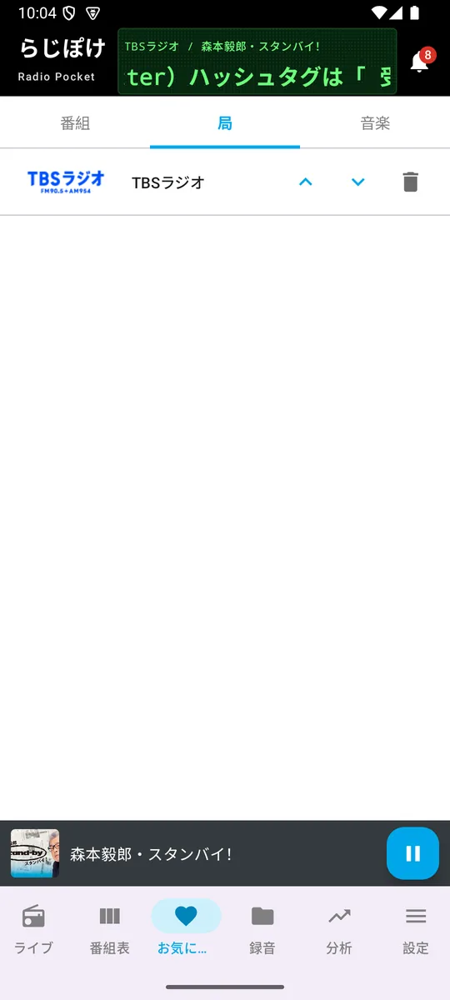
局。ライブタブで局を長押しすると入ります
- 番組 — 番組詳細の ♥、または番組表の長押しで登録します。
プレミアムなら、ここから自動録音が動きます
- 局 — ライブタブで局のカードを長押しすると登録されます。
ウィジェットや目覚ましで使う「よく聴く局」になります
- 音楽 — オンエア曲や分析の画面で ♡ を押すと貯まります
お気に入りの局の並びと、番組表の「デフォルト局」は別のものです。
デフォルト局は「アプリを開いて最初に番組表を出したときの局」を1つ決めるもので、
番組表の局名を長押しして設定します。
こんな使いかた
- よく聴く局を3つほど入れて、ウィジェットから鳴らす
- 毎週の番組を入れて、録り逃しをなくす
- 気に入った曲を ♡ で貯めて、あとでまとめて音楽サービスで探す
マーク（ブックマーク）スタンダード以上
番組の中の「ここ」に印をつけます。再生は止まりません。
- 再生シートいちばん下の「マークを置く」を押す
- 一覧の ✎ からメモを書く
- 一覧の行を押すと、その場所から再生が始まる
メモを書いていないマークには、そのとき流れていた曲名が手がかりとして出ます
（曲が分かる番組のとき）。時刻だけが並んでも、どれがどれだか分からなくなるためです。
設定 →「マークから再生する位置」で、印の少し手前（5秒前・10秒前）から始めるようにできます。
押すまでの一呼吸を見込んだ設定です。マークを置いた位置は動きません。
プランを下げても、置いたマークは消えません。スタンダードに戻すと、そのまま出てきます。
こんな使いかた
- 面白かったトークの場所
- あとで調べたい話題（メモに単語を書いておく）
- 共有したい場面（メモがそのまま投稿文になります）
共有する
SNSに投稿する
聴いている番組を、場所を指定して人に勧められます。
受け取った人は、リンクを開くとその場所から聴けます。
- 再生シートの「共有」を押す（番組詳細の ↗ からも開けます）
- 「どこから聴いてもらうか」を選ぶ
- 「付けるもの」でハッシュタグを足したり外したりする
- 「投稿する文」をその場で書き直す
- 送り先（X / Threads / Bluesky / URLをコピー / その他アプリへ）を押す
「どこから聴いてもらうか」は、番組によって次のものが並びます。
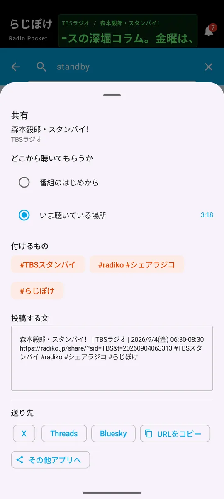
共有シート。上から順に、場所・タグ・文・送り先
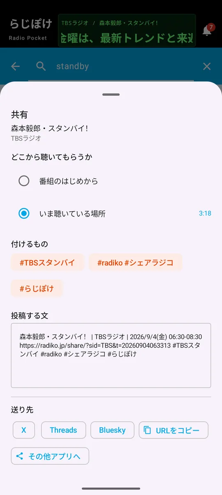
「いま聴いている場所」を選んだところ。投稿する文がその場で変わります
- 番組のはじめから
- いま聴いている場所（再生中のときだけ）
- マークした場所（マークがあるとき。メモがあれば見出しに出ます）
- 曲が流れた場所（オンエア曲が分かる番組のとき）
マークから直接共有することもできます。
再生シートのマークの一覧で、その行の ↗ を押してください。
そのマークが選ばれた状態で共有シートが開き、メモが投稿する文の先頭に入ります。
「付けるもの」で選べるのは次の4つです。押すたびに入れ替わり、
次に開いたときも覚えています。
- 番組のハッシュタグ — 番組情報に書かれているものを拾います
- #radiko #シェアラジコ
- #らじぽけ
- マークのメモ（メモのあるマークを選んだとき）
投稿するかどうかは、いつでもあなたが決めます。
らじぽけが勝手に投稿することはありません。送り先を押すと、
そのアプリ（またはブラウザ）が文の入った状態で開くので、そこで確かめてから投稿してください。
こんな使いかた
- 面白かったトークの場所を指して「ここから聴いて」と勧める
- いい曲がかかった場所を、曲名つきで流す
- マークのメモに感想を書いておいて、そのまま投稿文にする
- 「URLをコピー」で、家族や友人へのメッセージに貼る
調べる
分析タブとは
「分析」タブは、放送局で流れた曲と番組表に載った出演者を集めて、
数えたものです。
あなたの聴取履歴ではありません。
何を聴いたかは集めていません。集めているのは、放送局が公開している
「その番組で流れた曲」と「その番組に出た人」です。
集計は1日1回、Wi-Fi につながっているときに自動で行います。
集め終わっていない期間は「集めているところです」と出ます。
見るエリアを切り替える — 上のチップで切り替えます。
お住まいの地域は最初から入っています。
設定 →「分析の収集エリア」でエリアを足すと、そのぶんも見られるようになります
（radiko プレミアム（エリアフリー）に加入している方向けの機能です）。
エリアごとに数え、混ぜません。
同じ日でも、東京と大阪ではよく流れる曲が違います。
それが見えるようにするための分け方です。
こんな使いかた
- いまラジオでよく流れている曲を知る
- 地域ごとの流行りの違いを眺める
- 好きなアーティストが、どのくらいかかっているか確かめる
いま流行っている曲
「いま」タブには、昨日のトップ3と直近のトップ20が並びます。
集計する期間は7日／14日／30日から選べます。
曲を押すと「曲の詳細」が開きます。
- まとめ — 初めて流れた日・最後に流れた日・合計
- よく流れる局 — その曲をよくかける局
- 流れた番組 — かかった番組と時刻。「すぐに再生」でその場所から聴けます
曲名の下の Spotify / YT Music を押すと、
そのサービスで曲を開きます。
そのサービスのアプリが端末に入っていれば、アプリで開きます。
同じボタンは番組詳細の「オンエア曲」にもあります。
こんな使いかた
- 耳に残った曲を、番組から辿って曲名を突き止める
- 気になった曲をそのまま音楽サービスで聴く
- 「流れた番組」から、その曲がかかった瞬間に飛ぶ
過去の同時期
「過去TOP3」タブは、今日・1年前・2年前・3年前の同じ時期に
よく流れていた曲を、それぞれトップ3で並べます。
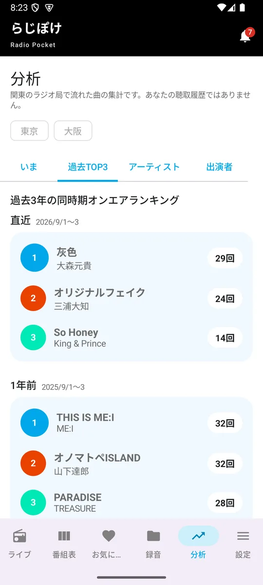
見出しに、実際に数えた日付の範囲が出ます
まだ集めていない期間・その日は記録が無かった期間・radiko の提供範囲より古い期間は、
区別して表示します。
「過去TOP3」は、お住まいの地域のぶんだけです。
収集エリアを足しても、ここは在圏エリアのまま変わりません。
こんな使いかた
- 「去年の今ごろ何が流行ってたっけ」を思い出す
- 季節ものの曲が、毎年いつ頃から増えるかを眺める
アーティストで探す
「アーティスト」タブでは、名前を入れて、その人の曲がいつ・どれだけ流れたかを見られます。
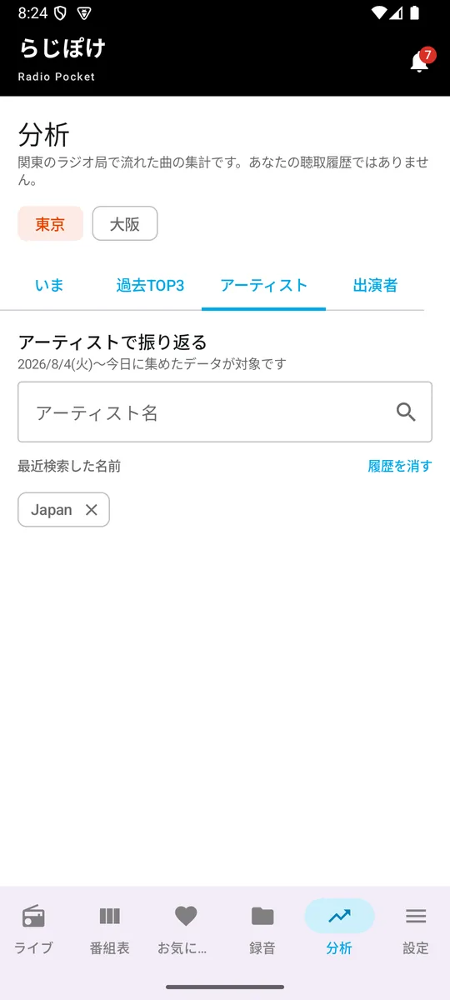
名前を入れる前の画面。過去に検索した名前が下に残ります
- 名前を入れて、🔍（またはキーボードの検索キー）を押す
- 週ごとの回数のグラフが出る
- 下に曲の一覧が並ぶ。♡でお気に入り（音楽）に入れられる
検索した名前は履歴に残ります。チップの × で1件ずつ消せます。
検索は検索ボタンかキーボードの検索キーで確定したときだけ走ります。
入力の途中では検索しないので、履歴に半端な文字列は残りません。
こんな使いかた
- 新曲が出たあと、ラジオでかかり始めたかを追う
- 好きなアーティストの、意外な曲を見つける
- グラフの山から、その週に何かあったのかを推し量る
出演者から探す
「出演者」タブは、番組表から集めた出演者の一覧です。
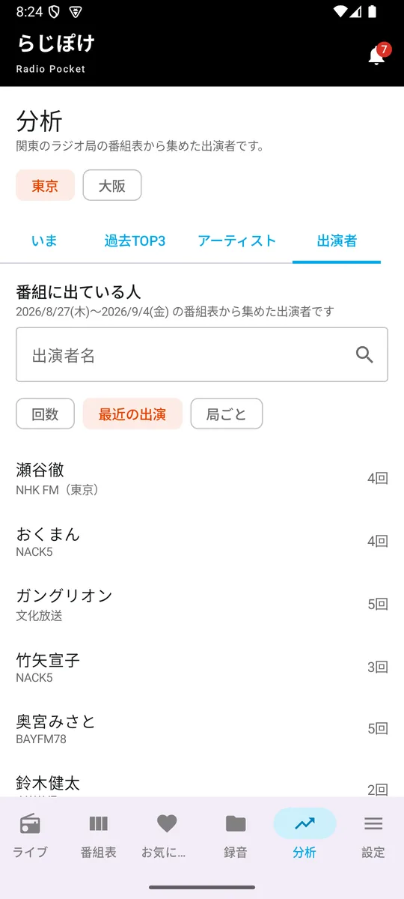
集めた期間が見出しに出ます
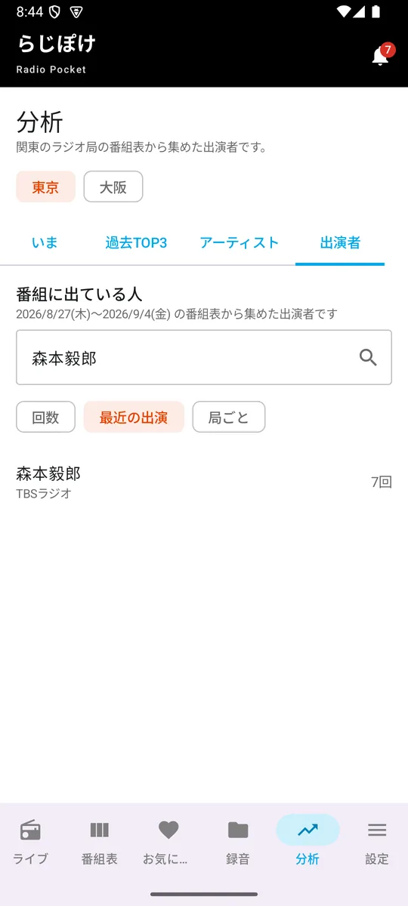
その人の出ている番組と、放送された回数
いちばん早いのは番組詳細から辿る方法です。
- 番組詳細を開く
- 出演者の名前の札を押す
- 「分析」の「出演者」に、その人の出ている番組が並ぶ
並べ替えは回数・最近の出演・局ごとから選べます。
同じ番組が複数の局で同時に流れているときは、1回として数えます。
局によって番組名の書き方が違っても、同じ番組としてまとめます。
こんな使いかた
- 好きなパーソナリティの、他のレギュラー番組を見つける
- ゲスト出演を拾って、聴き逃した回を探す
- 見つけた番組をそのままお気に入りに入れて、自動録音につなげる
便利に使う
ウィジェット
ホーム画面に置くと、アプリを開かずに操作できます。3種類あります。
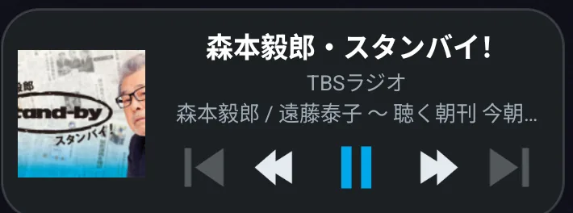
再生（3×1）— いま再生しているものを操作します
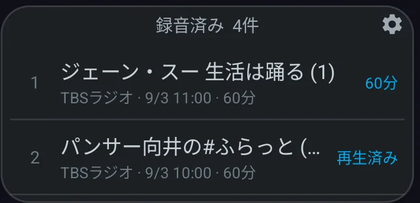
録音済み（3×2）— 録音した番組を並べ、押すとその場から再生します
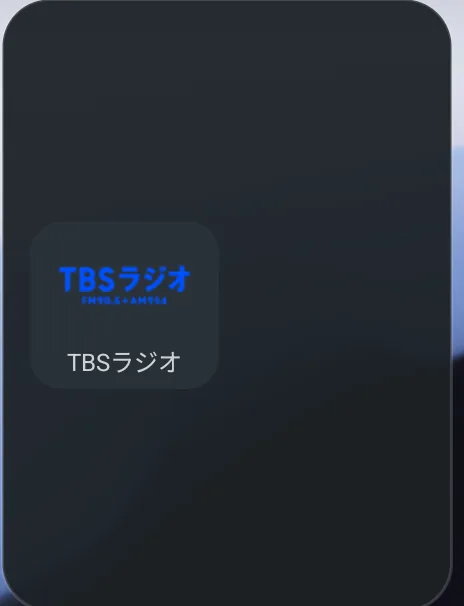
お気に入りの放送局（2×2）— よく聴く局をひと押しで鳴らします
- ホーム画面の空いているところを長押しする
- 「ウィジェット」を選ぶ
- 一覧から「らじぽけ」を開き、置きたいものを選ぶ
「お気に入りの放送局」は、先にお気に入りの局を登録しておくと中身が入ります。
こんな使いかた
- 朝、ホーム画面からいつもの局をひと押しで鳴らす
- 通勤中、アプリを開かずに一時停止・再開する
- 録音済みウィジェットから、続きをすぐ再生する
ラジオで目覚ましプレミアム
指定した時刻に、お気に入りの局か録音した番組で起こします。
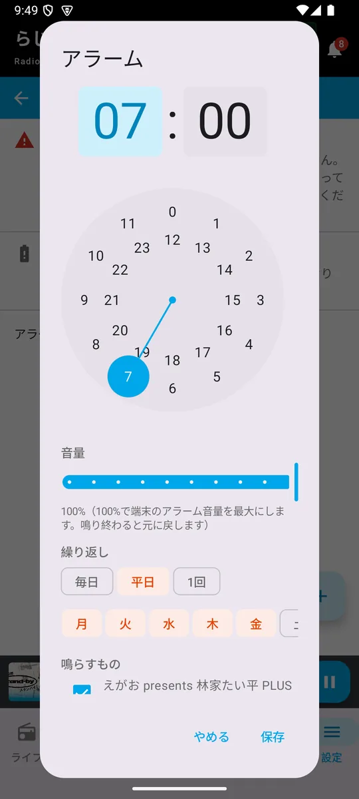
時刻・音量・繰り返し・鳴らすものを決めます
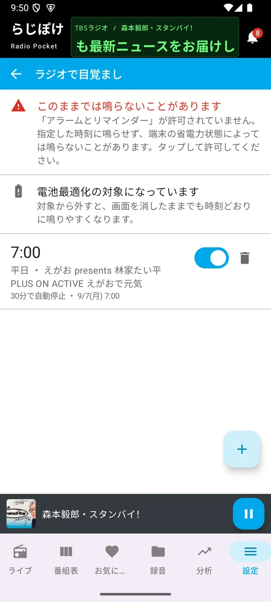
次に鳴る日時が一覧に出ます
- 設定 →「ラジオで目覚まし」を開く
- 右下の ＋ を押す
- 時刻・音量・繰り返し（毎日／平日／1回／曜日）・鳴らすものを決めて「保存」
電波が届かないときは、端末のアラーム音に切り替わります。
鳴らない朝がないようにするための仕組みです。
画面の上に「このままでは鳴らないことがあります」と出たときは、
Android の権限（通知・アラームとリマインダー・電池の最適化）を許可してください。
一部の機種にある「使っていないアプリをスリープにする」設定も、
らじぽけを対象から外しておくと確実です。
プランを下げても、登録した設定は消えません。プレミアムに戻すと、そのまま鳴り出します。
こんな使いかた
- 朝のニュース番組で起きる
- 録音しておいた好きな番組で起きる
- 平日だけ／土曜だけ、と曜日を分けて設定する
スリープタイマー
指定した時間がたつと、再生を止めます。
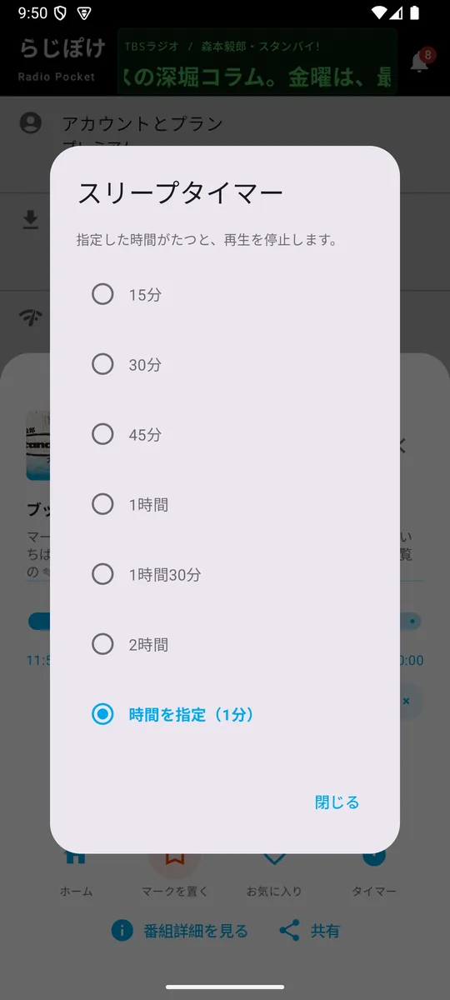
15分〜2時間、または分を直接指定
- 再生シートいちばん下の「タイマー」を押す
- 時間を選ぶ
動いている間は、残り時間が画面に出ます。寝落ちしても朝までかかりっぱなしになりません。
こんな使いかた
- 寝る前に30分だけ流す
- 入浴中、のぼせない程度の時間で切る
設定
「設定」タブに、アプリ全体に関わるものが集まっています。
設定タブ
| 項目 | できること |
|---|
| アカウントとプラン | radiko へのログイン、らじぽけのプラン、クーポンコード |
| ダウンロード | 録音の保存先（ローカル／共有ストレージ） |
| 録音するときの通信 | Wi-Fi のときだけ録るかどうか |
| ラジオで目覚まし | 目覚ましの設定プレミアム |
| 自動録音の間隔 | 新しい放送予定を取りにいく間隔プレミアム |
| 録音の保持 | お気に入り番組ごとに残す回数の上限 |
| 再生速度 | 次から使う速さスタンダード以上 |
| マークから再生する位置 | マークの何秒前から再生するかスタンダード以上 |
| 画面の明るさ | 自動（端末に合わせる）／ダーク／ライト |
| 番組表のデフォルト局 | 最初に番組表を開いたときの局 |
| 分析の収集エリア | 分析で集めるエリアを足す |
| 情報とサポート | 使い方・意見箱・ロードマップ・変更履歴・プライバシーポリシー |
うまくいかないこと・こうしてほしいことは、
設定 →「情報とサポート」→「意見箱」から匿名で送れます。
同じ画面から稼働ログも送れます（送るかどうかは、そのつどあなたが選びます）。
こんな使いかた
- 夜がまぶしいなら「画面の明るさ」をダークに
- 通信量が気になるなら「録音するときの通信」を Wi-Fi のときだけに
- 不具合に当たったら、意見箱から稼働ログを添えて送る
料金プラン
らじぽけには、性質の違う2つの契約が関わります。混同しやすいので、先に分けて書きます。
| radiko プレミアム | らじぽけのプラン |
|---|
| 誰との契約か | radiko | らじぽけ |
| 何が変わるか | 全国の放送局が聴けるようになる
（エリアフリー） | 広告・録音の保有数・頭出しなど、
アプリの機能が変わる |
| 支払い先 | radiko | Google Play の定期購入 |
片方に入っても、もう片方は変わりません。
radiko プレミアムに入ってもらじぽけの広告は消えず、
らじぽけの有料プランに入っても、お住まいの地域の外は聴けるようになりません。
らじぽけのプランは3段階です。設定 →「アカウントとプラン」で比べられます。
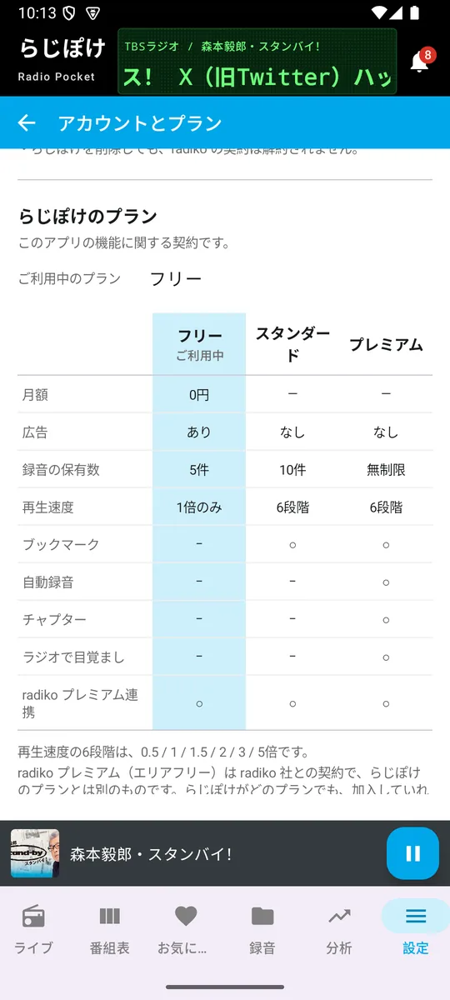
設定 → アカウントとプラン
| フリー | スタンダード | プレミアム |
|---|
| 月額 | 0円 | 250円 | 500円 |
| 広告 | あり | なし | なし |
| 録音の保有数 | 5件 | 10件 | 無制限 |
| 再生速度 | 等倍のみ | 6段階 | 6段階 |
| マーク | − | ○ | ○ |
| 自動録音 | − | − | ○ |
| 頭出し（チャプター） | − | − | ○ |
| ラジオで目覚まし | − | − | ○ |
| radiko プレミアム連携 | ○ | ○ | ○ |
プランを上げるのは Google Play の定期購入です。解約も Google Play 側の操作で行います。
アプリを削除しても定期購入は解約されません。
プランを下げても、それまでに作ったものは消えません。
お気に入り・チャプター・マーク・目覚ましの設定はそのまま残り、
表示や利用が止まるだけです。プランを戻せば、そのまま使えます。
クーポンコード — お渡ししたコードをお持ちの場合は、
設定 →「アカウントとプラン」の下のほうから入力できます。
一定の期間だけ上位のプランになり、期限が来るとお知らせせずにフリープランへ戻ります。
いつまで有効かは、この画面でいつでも確認できます。
こんな使いかた
- まずフリーで使ってみて、録音の本数が足りなくなったら上げる
- お住まいの地域の外を聴きたいなら、radiko プレミアムのほう
- 広告を消して倍速で聴きたいなら、らじぽけのスタンダード
このページの画面写真と動画は Android の実機相当（エミュレータ）で撮ったもので、
お使いの端末や radiko 側の変更により、見た目が異なることがあります。